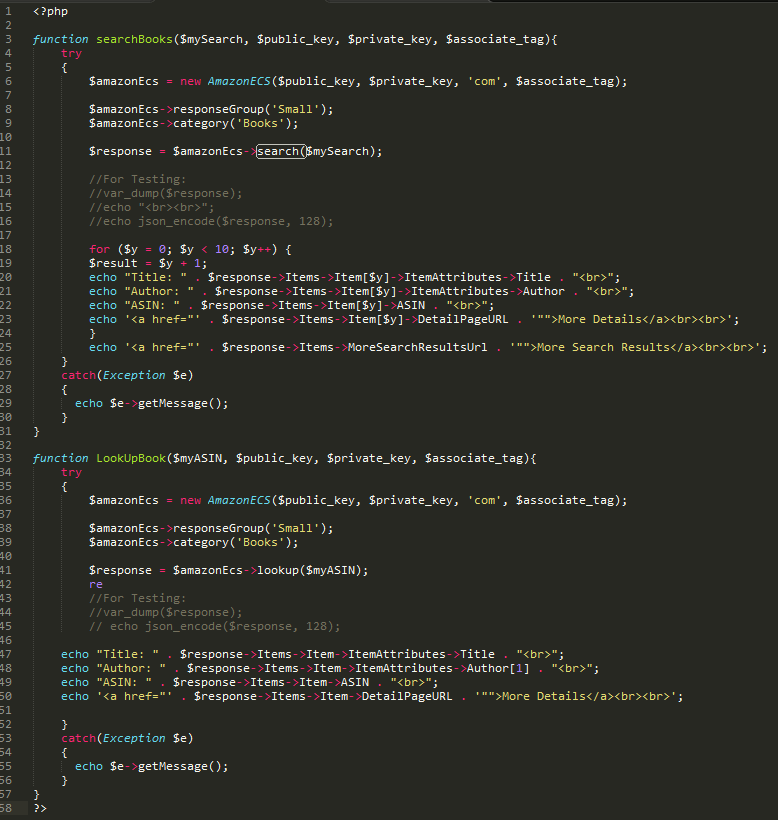
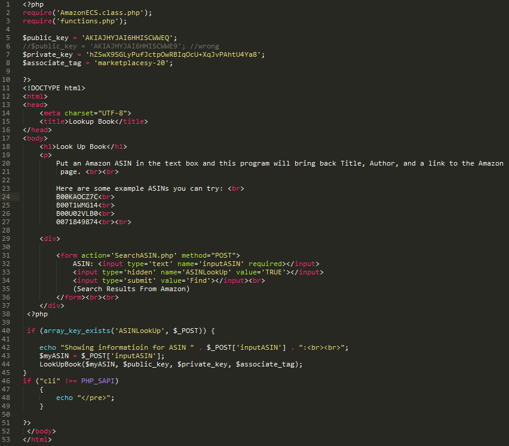
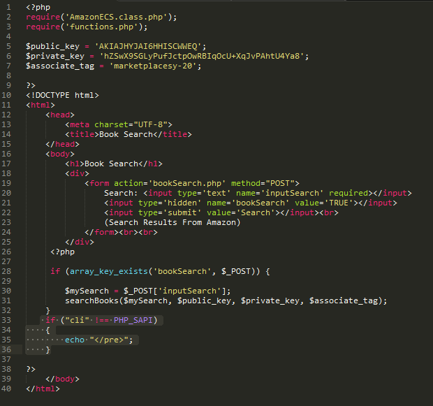

Example code
This is an example of two programs using the search and look up functions from Sections 3 and 4.
I created three files functions.php, LookUpASIN.php, and BookSearch.php.
I put the lookup and search functions along with echo results statements in the functions.php file.
Then I created two interfaces LookUpASIN.php and BookSearch.php. Here is the source code:
functions.php

LookUpASIN.php

BookSearch.php

Link to Live example:
LookUpASIN.phpBookSearch.php